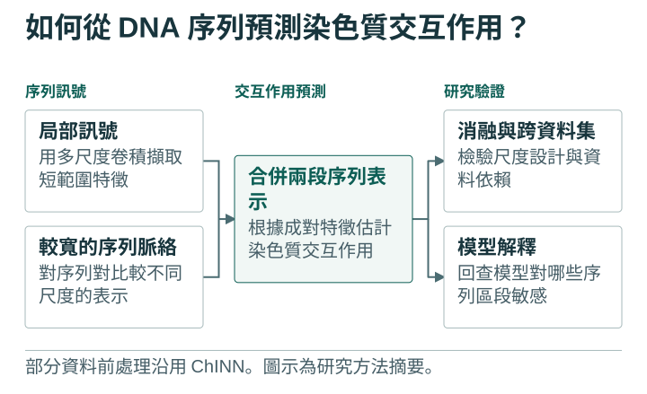
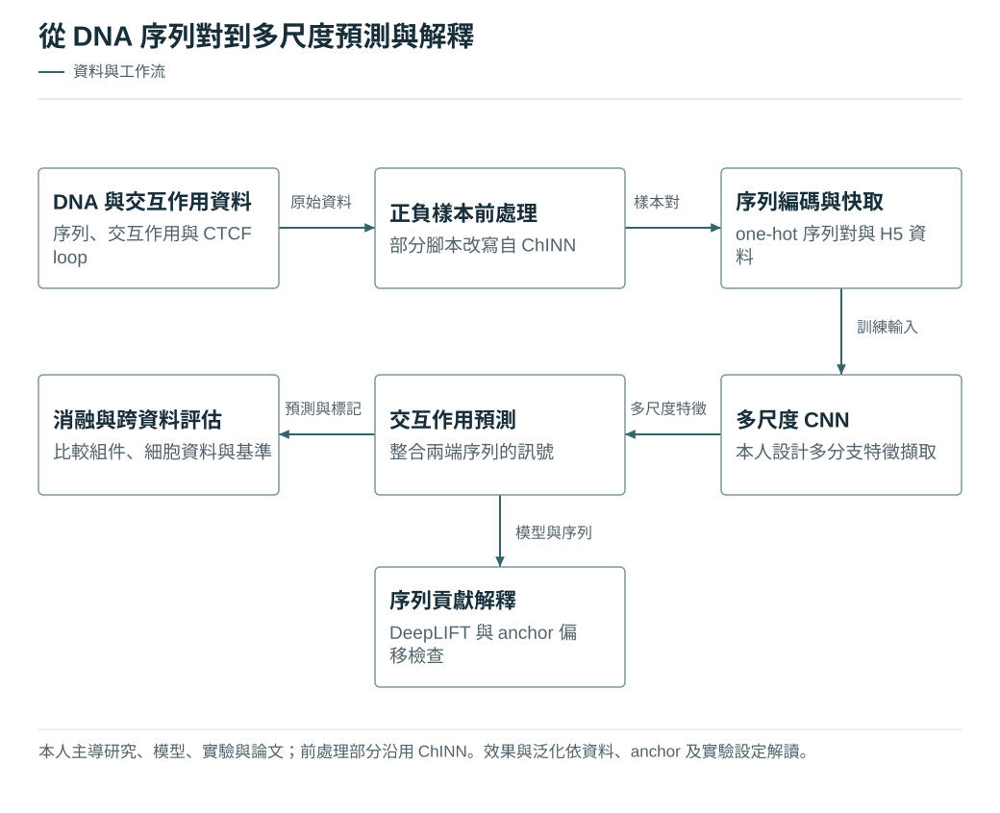

碩士論文
MCIENet：基因序列與染色質交互作用
設計多尺度卷積模型，從 DNA 序列預測三維染色質交互作用，並進行消融、跨資料集評估與模型解釋。
- 負責範圍
- 獨立主導研究問題、模型架構、資料流程、實驗評估及論文撰寫；部分資料前處理改寫自 ChINN。
- 成果與狀態
- 完成碩士論文、研究程式及配置，提供消融、跨資料集評估與模型解釋。
- 紀錄時間
- 2024 年碩士論文
情境與目標
DNA 序列不同尺度訊號需轉成可檢驗的三維染色質交互作用預測。
- 研究問題：不同長度的局部序列訊號，能否透過多尺度設計共同參與預測。
- 驗證主線：一致資料設定、模型與消融比較，再檢查跨資料集及可解釋性。

部分資料前處理沿用 ChINN。圖示為研究方法摘要。（點圖放大）系統架構與流程
架構說明
- 輸入
- DNA序列對與染色質交互作用／CTCF loop資料。
- 處理方式
- 以多尺度CNN檢查不同範圍訊號，透過消融、跨資料集與模型解釋核對。
- 產出
- 碩士論文、研究程式與可回查實驗配置。
流程圖

本人主導研究、模型、實驗與論文；前處理部分沿用 ChINN。效果與泛化依資料、anchor 及實驗設定解讀。（點圖放大）研究原圖
 原始研究流程：資料準備、MCIENet 與可解釋性分析；部分前處理基於 ChINN。（點圖放大）
原始研究流程：資料準備、MCIENet 與可解釋性分析；部分前處理基於 ChINN。（點圖放大）關鍵設計取捨
讓模型同時看見不同尺度的DNA訊號
挑戰只用DNA序列預測染色質交互作用，需同時處理局部片段與較長範圍訊號。
方法與取捨本人設計以Inception為基礎的多尺度特徵擷取，並用消融比較各組件。 實作多分支卷積與聚合，保存不同kernel、通道配置及pooling的實驗設定。 在前期研究累積的實驗方式上，整理 H5 前處理快取、各組 log／模型檔與參數探索，讓碩論的消融及參數比較更完整。
結果完成多尺度模型、對照實驗流程及碩士論文，讓架構的各項設計可以分開比較。
不預設大型預訓練模型能適用所有資料
挑戰不同細胞類型的DNA結構預測可能需要不同表示；預訓練規模不等於適用性。
方法與取捨本人比較不同細胞資料與DNABERT2基準，檢查模型的適用邊界。 在GM12878與HeLaS3評估，保留資料／模型設定及baseline流程。
結果論文記錄DNABERT2-512在HeLaS3的較弱表現；結論限本研究資料與設定，不概括所有預訓練模型。
分數之外，追查模型對哪段序列敏感
挑戰預測分數無法說明錨點偏移會不會讓方法失去穩定性。
方法與取捨本人以DeepLIFT查看序列貢獻，檢查長序列與anchor位置的限制。 以解釋分析比較模型關注區域，整理anchor中心偏移的觀察。
結果論文指出anchor-based方法對中心偏移的穩定性限制，保留結果解讀的邊界。
更多技術細節
多尺度卷積如何形成特徵
輸入為一對 DNA 序列與交互作用標籤。並行卷積分支擷取不同長度的局部訊號，經兩層 Inception 特徵抽取及可配置彙整形成預測特徵；消融用來檢查各設計的影響。
可重跑的消融對照及限制
設定可比較單一長度 9 與 3／5／7／9 並行分支，兩組保留 1×1 及 pooling，總通道均為 100，學習率、訓練上限及資料設定一致。不同分支參數總量仍需另外控制，不能直接把配置當成尺度效果或優勝證明。
資料切分與第三方方法
比較流程共用 train／dev／test，並保留 BaseCNN、MCIENet、DeepLIFT 及格式轉換入口。共同切分不自動證明基因區段無重疊或跨細胞泛化；部分前處理基於 ChINN，保留比較入口也不等於所有基準都已完成。
成果與驗證範圍
實際產出
完成碩士論文、研究程式及配置，提供消融、跨資料集評估與模型解釋。
驗證與限制
資料前處理部分沿用 ChINN；模型效果與泛化依實際資料及實驗設定解讀。